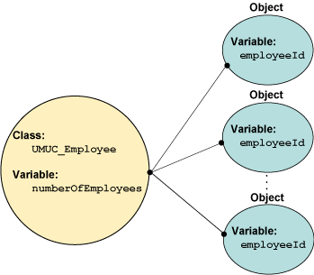

In module 3 and in section II of this module, we introduced the concept of methods and variables and showed how a method could be either a class or instance method, the difference between a class and instance method being determined by the use of the static modifier. Thus, to understand class and instance variables and methods, it is first necessary to understand static modifiers.
We will now look at the meaning of the static modifier, the implications of its use, and how being associated with a class affects variables, methods, and constants. We will now discuss class (static) variables, class (static) methods, and class (static) constants.
When a variable is declared static, it is associated with the class and not an object or instance of the class, so each static or class variable is shared by all the instances of the class. Also, because the class exists from the time the program starts execution until it completes execution, static variables exist, and are accessible, during the entire life of the program.
To understand how we may take advantage of this fact, consider an application that wants to keep track of how many UMUC_Employee objects have been created and to use this number to make an employeeId for each UMUC_Employee object. The employeeId will simply be the number of UMUC_Employee objects already created. For this application, the number of UMUC_Employee objects could be kept in a static variable, and this variable could be incremented in the UMUC_Employee constructor each time a UMUC_Employee object is created. This situation is shown in the following program.
Note that the line declaring the static variable is highlighted. Move your mouse over OUTPUT to see what is printed.
/* File: UMUC_Employee.java
* Author: InstructorX
* Date: dd-mm-yyyy
* Purpose: shows the difference between a static variable
* and an instance variable
*/
public class UMUC_Employee {
private static int numberOfEmployees = 0;
private int employeeId = 0;
public UMUC_Employee() {
employeeId = ++numberOfEmployees;
} // end method
public int getEmployeeId() {
return employeeId;
} // end method
public static void main(String args[]) {
UMUC_Employee emp1 = new UMUC_Employee();
UMUC_Employee emp2 = new UMUC_Employee();
System.out.println("emp1 id is " + emp1.getEmployeeId()); // OUTPUT
System.out.println("emp2 id is " + emp2.getEmployeeId()); // OUTPUT
System.out.println("total number of employees is " +
UMUC_Employee.numberOfEmployees); // OUTPUT
} // end method
} // end class
We can represent this situation by the diagram in figure 5.III-1.
Figure 5.III-1
The Relationship of Class and Instance Variables

In the program above, there is one copy of the numberOfEmployees variable, which is declared static, but there is a copy of the employeeId variable for each UMUC_Employee object. Because the numberOfEmployees variable is static, it can be used to count the number of employee objects that have been created. Figure 5.III-1 above shows that the static modifier affects a variable in the following ways:
If a variable is static, there is only one copy, and it is shared with all objects of that class. Static variables exist from the time the program begins execution until the program ends execution, so every reference to a static variable references the same static variable.
If a variable is not static, it is an instance variable, and each object has its own copy of all the variables that make up that object.
In this section, the class (or static) variable is only used internally to the class and so is encapsulated by making it private and accessing it only through methods. This process is similar to the way in which instance variables were made private in section II. But there are many valid reasons for making variables, particularly class variables, public. We will cover some of these reasons later in this module.
When we introduced class methods in module 3, we said that these methods were also called static. The static modifier means the same thing for a method that it does for a variable; it means that the method is associated with the class and not with an instance of the class. In module 3 and in section II, we discussed the following two differences between class methods and instance methods:
class methods are declared with the static modifier
Instance methods are associated with instance data for the class (e.g., an object), but class methods are not associated with any data other than the parameters passed into them.
An understanding of the use of static gives insight into these two differences. The second difference (class methods are associated with a class, not an object) is a direct result of the first (class methods are declared static). So, in reality, there is only one difference between class and instance methods—whether they are associated with the class or an object. This difference is then implemented through the use of the static modifier.
The distinction is important. When you use a static modifier with a method, it associates that method with a class and not an instance. Therefore, static methods are class methods and do not contain, and hence cannot access, instance data. For example, the following program shows a common error made by novice programmers in Java.
The line with the error is highlighted.
/* File: UMUC_InstanceError.java
* Author: InstructorX
* Date: dd-mm-yyyy
* Purpose: show that an instance variable cannot be used
* in a static method
*/
public class UMUC_InstanceError {
private static int classVar = 0;
private int instanceVar = 0;
public static void main(String args[]) {
classVar = 1; // Valid, because class variables can be
// used in class methods.
instanceVar = 1; // Invalid, because instance variables
// cannot be used in class methods.
} // end method
} // end class
This program shows an instance variable, instanceVar, being used in the main method, which is a static method. Remember that there can be literally hundreds of instances of a class, but only one class. Therefore, the attempt to access the instance variable in the main (static) method is an error in Java because the static method cannot know which of possibly thousands of copies of the instance variable to use.
But whereas static methods cannot access instance variables, there is no logical reason why instance methods cannot access static variables. For example, consider the following program.
/* File: UMUC_Variables.java
* Author: InstructorX
* Date: dd-mm-yyyy
* Purpose: show that a class variable can be used
* in an instance method
*/
public class UMUC_Variables {
private static int classVar = 0;
private int instanceVar = 0;
public void UMUC_Variables() {
} // end method
public void instanceMethod() {
classVar = 1; // Valid, because class variables can
// be used in instance methods
instanceVar = 1; // Valid, because instance variables can
// be used in instance methods
} // end method
} // end class
The method instanceMethod can access both the variables named classVar and instanceVar. The variable classVar can be accessed because there is only one class associated with any object, and hence only one classVar variable. Therefore, the reference to classVar is unambiguous. The variable instanceVar can be accessed in the method instanceMethod because instance methods are associated with instances of the class, and therefore instanceMethod knows which instance of the class to use to obtain a value of instanceVar.
When a method is declared as an instance method in Java, it is associated with an object regardless of whether or not it uses any of the data in that object. Another error novices commonly make in Java programming is to try to use instance methods called from a static method. The following program shows this error when using methods in Java.
The line with the error is highlighted.
/* File: UMUC_MethodError.java
* Author: InstructorX
* Date: dd-mm-yyyy
* Purpose: show that an instance method cannot be called
* from a static method
*/
public class UMUC_MethodError {
public int max(int val1, int val2) {
int maxValue;
if (val1 > val2)
maxValue = val1;
else
maxValue = val2;
return maxValue;
} // end method
public static void main(String args[]) {
int i1 = 7, i2 = 9, i3;
i3 = max(i1, i2); // Invalid. The method max is an
// instance method, and is not
// accessible in a static method.
System.out.println("max is " + i3);
} // end method
} // end class
In this program, the main method, which is static and associated with the class, attempts to call the max method, which is an instance method and associated with an object. The programmer might believe that this is correct because the max method does not use any data associated with an object instance. But this method has not been declared static, so it is associated with an object, regardless of how the programmer uses it. This is an error because the call to max in the static method now needs an object when called. This method could be corrected simply by allocating an object so that it can be used, as in the following program. The corrected code is highlighted.
/* File: UMUC_MethodError.java
* Author: InstructorX
* Date: dd-mm-yyyy
* Purpose: show that an instance method needs an object
* to be called from a static method
*/
public class UMUC_MethodError {
public int max(int val1, int val2) {
int maxValue;
if (val1 > val2)
maxValue = val1;
else
maxValue = val2;
return maxValue;
} // end method
public static void main(String args[]) {
int i1 = 7, i2 = 9, i3;
UMUC_MethodError m1 = new UMUC_MethodError();
i3 = m1.max(i1, i2); // Now it is valid because it is
// called with an object.
System.out.println("max is " + i3);
} // end method
} // end class
Because the max method does not use any instance variables, however, the allocation of the object to use the max method is really a wasted step, necessitated only by the programmer declaring the method an instance method. In cases where a method does not use any data from the instance, it is usually best to simply associate the method with a class, as in the following program.
Move your mouse over OUTPUT to see what is printed.
/* File: UMUC_MethodError.java
* Author: InstructorX
* Date: dd-mm-yyyy
* Purpose: show that a method that does not use instance data
* should be a class method
*/
public class UMUC_MethodError {
public static int max(int val1, int val2) {
int maxValue;
if (val1 > val2)
maxValue = val1;
else
maxValue = val2;
return maxValue;
} // end method
public static void main(String args[]) {
int i1 = 7, i2 = 9, i3;
i3 = max(i1, i2); // max is defined as a class method,
// so this call is now valid.
System.out.println("max is " + i3); // OUTPUT
} // end method
} // end class
In module 1, we saw that it is possible to create constants by declaring a variable final. For example, the constant PI could be declared in the class MyMath as:
public class MyMath {
public final int PI = 3.l4159;
}
This declaration of PI creates a public constant. You would almost never see this type of declaration, however, in a Java program written by an experienced Java programmer. In Java, public constants are almost always declared using the static modifier. The rationale for doing so is the same as for the use of the static modifier for class methods in the previous section.
For example, suppose a programmer wanted to use the constant PI from the MyMath class given above. To use the constant, an instance of the class MyMath would have to first be created, as shown below.
public class BadlyUsedConstant {
public static void main(String args[]) {
double area, radius = 2;
MyMath myMath = new MyMath();
area = radius * radius * myMath.PI;
}
}
There is no reason to create an instance of the class MyMath except to use the constant PI. Creating the myMath object is simply confusing, serves no purpose, and wastes computer resources. It is always best in these situations to simply make public constants static variables so that they can be used in other classes without instantiating an object. For example, a correct definition of the constant PI in the class MyMath would be as follows:
public class MyMath {
public static final int PI = 3.l4159;
}
The variable PI can now be used as a class variable, as shown below:
public class CorrectConstant {
public static void main(String args[]) {
double area, radius = 2;
area = radius * radius * MyMath.PI;
}
}
A good rule is:
Constants for a class should always be declared static in Java.
In fact, for efficiency reasons, it is usually better to use the static modifier with any final variables declared in the class (note that this does not apply to final variables declared in a method). The exceptions to this rule generally involve an unusual use of objects and are beyond the scope of this course.